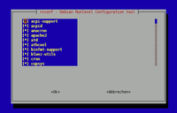
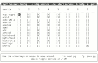

SysVinit
Dieser Artikel wurde für die folgenden Ubuntu-Versionen getestet:
Ubuntu 14.04 Trusty Tahr
Zum Verständnis dieses Artikels sind folgende Seiten hilfreich:
Bei Ubuntu kommen zur Verwaltung von Diensten unterschiedliche Init-Systeme zum Einsatz. Die Informationen in diesem Artikel beziehen sich auf SysVinit, welches beim Ubuntu-Systemstart zwar keine Funktion mehr hat, aber weiterhin bei der Verwaltung von Serverdiensten eine wichtige Rolle spielt.
SysVinit startet Dienste nacheinander in einer festgelegten Reihenfolge. Dies macht den Startvorgang zuverlässig, aber auch langsam und war der Hauptgrund, warum alternative Init-Systeme wie Upstart und systemd entstanden sind. Allerdings sei angemerkt, dass sich alle Weiterentwicklungsbestrebungen auf Desktopsysteme und mobile Rechner beschränken. Server laufen dagegen rund um die Uhr und werden nur zu Wartungszwecken neu gestartet, womit der Vorteil eines schnelleren Startvorgangs relativ unwichtig ist.
SysVinit kennt verschiedene Zustände: die Runlevel. In insgesamt sechs Runlevels ist definiert, ob und wann ein Dienst automatisch gestartet bzw. gestoppt werden muss. Der Standard-Runlevel unter Debian und Ubuntu ist 2. Dieser ist als "lokaler Mehrbenutzerbetrieb ohne Netzwerk mit ausschließlich lokalen Ressourcen" definiert. Unter Ubuntu wird hier im Gegensatz zu Debian aber auch der Netzwerkbetrieb konfiguriert.
Starten und Beenden von Diensten¶
Möchte man Dienste von Hand beenden, (neu-)starten oder den Status abfragen, so gibt es hierfür den Befehl service. Dieser erleichtert bis einschließlich Ubuntu 14.10 den Umgang bei Hybridsystemen mit Upstart und SysVinit, da der Befehl beide Systeme nach einem Dienst mit dem entsprechenden Namen durchsucht und den Befehl automatisch an das richtige System weiterleitet. Außerdem sorgt er vor der Ausführung von SysVinit-Skripten für einen "sauberen" Satz an Umgebungsvariablen und setzt das Arbeitsverzeichnis auf /. Schematisch erfolgt der Aufruf nach folgendem Muster [1]:
sudo service DIENSTNAME [start|stop|restart|status|...]
Die Ausgabe unterscheidet sich leicht, je nachdem, welches Init-System der jeweilige Dienst verwendet. Als konkretes Beispiel könnte man wie folgt verifizieren, ob der Dienst SSH aktiv ist (Verwaltung über Upstart):
sudo service ssh status
ssh start/running, process 656
Zum Neustarten des Webservers Apache (Verwaltung über SysVinit):
sudo service apache2 restart
* Restarting web server apache2 ...done.
Start-/Stopp-Skript und Runlevel¶
Jeder von SysVinit verwaltete Dienst besitzt ein Start-/Stopp-Skript im Verzeichnis /etc/init.d/. Die Skripte enthalten Befehle, um einen Dienst zu starten bzw. zu beenden. Sie können von Hand oder automatisch beim Booten oder Herunterfahren des Systems aufgerufen werden. Für den manuellen Aufruf kann, wie oben beschrieben, der Befehl service benutzt werden. Die Start-/Stopp-Skripte lassen sich aber auch ebenso gut direkt ausführen:
sudo /etc/init.d/DIENSTNAME [start|stop|restart|...]
Als konkretes Beispiel hier der Befehl, um den Webserver Apache2 zu starten:
sudo /etc/init.d/apache2 start
Wenn jetzt ein Start-/Stopp-Skript automatisch beim Booten ausgeführt werden soll, so wird es einfach nur in den entsprechenden Runlevels verknüpft (Symlink). Jedem dieser Runlevel ist ein Verzeichnis unterhalb von /etc/ zugeordnet. Dies sind:
/etc/rc0.d - während das System herunterfährt
/etc/rcS.d - während des Bootens ausführen
/etc/rc1.d - Arbeiten als einzelner Benutzer
/etc/rc2.d - Mehrbenutzerbetrieb inkl. Netzwerk
/etc/rc3.d bis /etc/rc5.d - bei Ubuntu nicht genutzt
/etc/rc6.d - während das System neu startet
Jedes Start-/Stopp-Skript besitzt zwei Arten von Symlinks: die einen beginnen mit "S" (für Start) und die anderen mit "K" (für Kill). Beim Betreten eines Runlevels werden zunächst die "K"-Links zum Beenden, danach die "S"-Links zum Starten von Diensten ausgeführt. Soll nun etwa ein Dienst nur im Runlevel 2 laufen, so liegt typischerweise in /etc/rc2.d ein "S"-Link, in allen anderen Runlevel-Verzeichnissen dagegen ein "K"-Link.
Die gewünschte Reihenfolge innerhalb der Start- oder Stopp-Sequenz wird durch eine Nummerierung nach dem "S" bzw. "K" im Linknamen festgelegt. So wird z.B. "S10irgendwas" vor "S20wasanderes" ausgeführt. Die Verwaltung der Runlevel erfolgt durch das Kommandozeilenprogramm update-rc.d  , dass mit Root-Rechten ausgeführt werden muss.
, dass mit Root-Rechten ausgeführt werden muss.
Hier ein Beispiel zum Setzen von "S" (Start) und "K" (Kill):
sudo update-rc.d DIENSTNAME defaults 80 10 ##entspricht update-rc.d DIENSTNAME start 80 2 3 4 5 . stop 10 0 1 6 .
Hinweis:
S80 und K10 sind bewusst gewählt, um sicher zustellen, dass das Beispiel erst sehr spät gestartet und früh beendet wird.
Deaktivieren von Diensten¶
Mit dem manuellen Beenden eines Dienstes lässt sich dieser für die aktuelle Sitzung beenden. Nach einem Neustart des Rechners wird er aber über den entsprechenden Eintrag in /etc/rc2.d wieder automatisch gestartet. Der folgende Befehl deaktiviert einen Dienst dagegen dauerhaft:
sudo update-rc.d DIENSTNAME disable
Um den Dienst wieder zu aktivieren:
sudo update-rc.d DIENSTNAME enable
Experten-Info:
Es ist nicht ausreichend, die Symlinks aus den Runlevels zu löschen (manuell oder mit sudo update-rc.de DIENSTNAME remove). Bei einer Aktualisierung (Update) des entsprechenden Pakets merkt die Paketverwaltung, dass diese Links nicht mehr existieren, und legt sie wieder an, da das System davon ausgeht, dass das Paket zum ersten Mal installiert wird. Um einen Dienst dauerhaft stillzulegen, werden statt dessen alle Start-Links in Stopp-Links umgewandelt, also beispielsweise /etc/rc2.d/S03bluetooth in /etc/rc2.d/K01bluetooth umbenannt. Diese Aufgabe übernimmt der disable Befehl.
Eigenes Start-/Stopp-Skript erstellen¶
Möchte man lediglich beim Hochfahren ein Programm ausführen oder einen Dienst starten, so ist ein Eintrag in /etc/rc.local die deutlich unkompliziertere Variante. Soll jedoch genauer konfiguriert werden, wie der laufende Dienst beim Herunterfahren beendet wird, so ist ein volles Start-/Stopp-Skript notwendig.
Dazu sollte man die bereits in /etc/init.d/ vorhandenen Skripte als Vorlage nehmen oder die offizielle Vorlage /etc/init.d/skeleton als Ausgangsbasis nutzen.
Wem die Start-/Stopp-Skripte und die offizielle Vorlage zu komplex sind, der kann sich ein relativ einfaches Start-/Stopp-Skript für fast jeden Zweck selbst schreiben. Man benötigt lediglich eine Datei, die auf folgendem Beispiel basiert:
#!/bin/sh
### BEGIN INIT INFO
# Provides: Was macht das Skript?
# Required-Start: Was muss vorher gestartet sein?
# Required-Stop: Was muss vorher beendet werden?
# Default-Start: 2 3 4 5
# Default-Stop: 0 1 6
# Short-Description: Kurze Beschreibung
# Description: Längere Beschreibung
### END INIT INFO
# Author: <name@domain.tld>
# Aktionen
case "$1" in
start)
/opt/beispiel start
;;
stop)
/opt/beispiel stop
;;
restart)
/opt/beispiel restart
;;
esac
exit 0Der Kommentar-Text im Kopfteil der Datei ist sehr wichtig und wird vom Befehl update-rc.d ausgewertet. Dieser Kommentar sollte angepasst, aber nie gelöscht werden! Mehr zu korrekten LSB-Init-Skripten findet man im Debian Wiki . Die Datei speichert man z.B. als /etc/init.d/beispiel und macht sie danach per
sudo chmod 755 /etc/init.d/beispiel
ausführbar. Anschließend fügt man das Skript mit dem Befehl update-rc.d in die entsprechenden Runlevel ein:
sudo update-rc.d beispiel defaults
Wird das selbst erstellte Start-/Stopp-Skript schließlich nicht mehr benötigt, so kann man es mit folgendem Befehl wieder aus dem Autostart entfernen:
sudo update-rc.d -f beispiel remove
Sämtliche Verknüpfungen zu /etc/init.d/beispiel werden damit aus den Runlevels gelöscht.
GUIs zum Bearbeiten von Diensten¶
Es gibt verschiedene grafische Oberflächen (GUIs) zum (De-)Aktivieren von Diensten, deren Verwaltung über SysVinit erfolgt. Da bei Ubuntu seit 9.10 nur noch Upstart zur Steuerung von internen Systemdiensten verwendet wird, sind die folgenden Angaben nur noch von historischem Nutzen (obwohl sich bestimmte Serverdienste weiterhin damit verwalten lassen).
Kommandozeile¶

rcconf¶
Für die Kommandozeile gibt es das Programm rcconf. Der Vorteil ist natürlich, dass man keinen XServer bzw. keine grafische Oberfläche braucht, um schnell Dienste bearbeiten zu können. Daher eignet es sich wunderbar für Server. rcconf ist in den offiziellen Paketquellen enthalten. Es muss lediglich folgendes Paket über die Paketverwaltung installiert [2] werden:
rcconf (universe)
 mit apturl
mit apturl
Paketliste zum Kopieren:
sudo apt-get install rcconf
sudo aptitude install rcconf

sysv-rc-conf¶
Eine Erweiterung von "rcconf" ist "sysv-rc-conf", mit dem man nicht nur die Dienste des aktuellen Runlevels bearbeiten kann, sondern alle Dienste - also Vorsicht! Das Programm wird durch das Paket
sysv-rc-conf (universe)
mit apturl
Paketliste zum Kopieren:
sudo apt-get install sysv-rc-conf
sudo aptitude install sysv-rc-conf
bereitgestellt.
Grafische Lösungen¶
Mit Ubuntu 9.10 wurden sämtliche ehemals vorhandenen Einstellungsmöglichkeiten von GNOME 2 unter "System -> Systemverwaltung" entfernt. Wer nun Dienste grafisch konfigurieren möchte, muss auf den Boot-Up-Manager ausweichen.
KDE¶
Natürlich lassen sich die Dienste auch unter KDE bearbeiten. Das Programm dazu findet sich unter
"K-Menü -> Systemeinstellungen -> Starten und Beenden -> Diensteverwaltung"
Dienste können einfach per Mausklick ausgewählt werden. Im Fenster rechts findet sich dazu (von oben nach unten) eine kurze Beschreibung des Dienstes, eine Option zum Feststellen, ob der Dienst beim Booten gestartet werden soll, der aktuelle Status sowie Optionen zum "Starten" und "Beenden".
Links¶
Upstart - Systemstart und Verwaltung von Diensten speziell bei Ubuntu (bis Ubuntu 14.10)
Systemd - neuer Init-Dienst, ab Ubuntu 15.04 vorinstalliert
Hochfahren - Boot-Vorgang unter der Lupe
 - Artikel EasyLinux, 01/2004
- Artikel EasyLinux, 01/2004Dienste/Erläuterung - Liste einiger Dienste und deren Bedeutung
Dienste
 Übersichtsartikel
Übersichtsartikel
- Erstellt mit Inyoka
-
 2004 – 2017 ubuntuusers.de • Einige Rechte vorbehalten
2004 – 2017 ubuntuusers.de • Einige Rechte vorbehalten
Lizenz • Kontakt • Datenschutz • Impressum • Serverstatus -
Serverhousing gespendet von